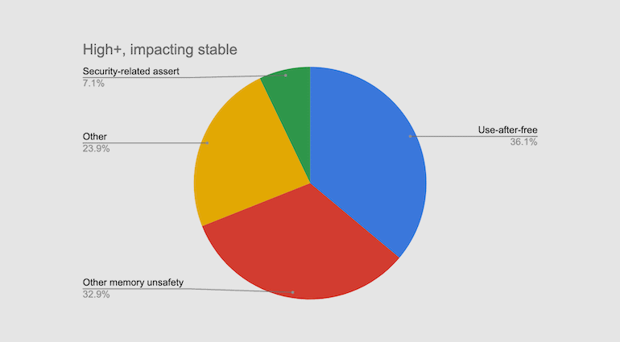
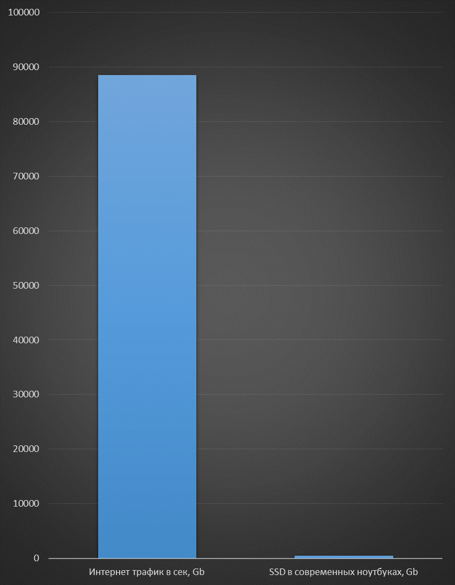
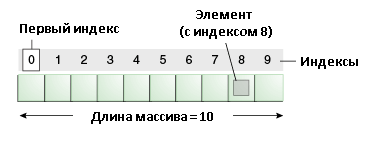

Created by drewxa@
Примерно 8 лекций, около 10 лабораторных работ, 8 семинаров и консультации.
Процесс разработки может быть устроен по разному в разных компаниях и командах.
Но всегда можно выделить следующие действующие лица:
Необходимо внедрить машинное обучение для определения сетевых атак в корпоративной сети.
“Реализовать утилиту для переформатирования данных из формата arff в формат данных для обучения с помощью алгоритма Catboost. Пример исходного файла можно посмотреть в приложенном файле final-dataset-short.arff, а c форматом для Catboost можно ознакомиться по ссылке.”
Согласно статистике примерно 70% ошибок безопасности связаны с неправильным управлением памятью.
For every second of the day, there is 88,555 GB of Internet traffic.
Для сравнения это как размер телефона и пятиэтажного здания.
С ростом данных требуется и увеличение скорости обработки этих данных.
Не стоит забывать, что параллелизм используется и в более прозаичных вещах.
Например, в UI (user interface), для обеспечения многозадачности в ОС и пр.
Простыми словами термин “структура данных” можно определить как
Различные «компоновки» эффективны в одних операциях и неэффективны в других.
Каждая структура данных обладает своими свойствами.
Поэтому разработчику для оптимального решения конкретной задачи постоянно приходится выбирать, какую именно структуру данных использовать.
Кроме этого, весь IT мир в той или иной мере использует структуры данных и алгоритмы работы с ними.
vector vs liststd::vector - динамический массив, который непрерывно расположен в памятиvector vs liststd::list - является двусвязным спискомКак следует из названия, это “семейство” структур данных, которые направлены на поиск элементов.
Двоичное дерево поиска – дерево, которое строится по определенным правилам:
Сложность поиска в двоичном дереве поиска O(h), где h – это высота дерева.
В сбалансированном дереве высота дерева оптимальна и равна log(N), где N – количество вершин дерева.
Чтобы двоичное дерево поиска “заработало”, на элементах дерева должна быть определена операция сравнения двух элементов.
В терминах С++ должен быть определен operator <.
Хеш-таблица - это обычный массив с необычной адресацией, задаваемой хеш-функцией.
Непрерывно выделенная память с быстрым доступом до элемента по целочисленному индексу.
Представим, что необходимо иметь константный доступ не по целочисленному индексу, а по объекту произвольного типа, например, по строке.
Если научиться преобразовывать строку (или объекты произвольного класса) в целое число, то задача с ассоциативным массивом сведется к решению с обычным массивом.
Хеш-функция – функция, осуществляющая преобразование массива входных данных произвольной длины в выходную битовую последовательность установленной длины, выполняемое определённым алгоритмом.
H("John Smith") -> 152
H("Lisa Smith") -> 001
H("Sam Doe") -> 254
H("Sandra Dee") -> 152
Хорошая хеш-функция должна сводить к минимуму число коллизий
Коллизия – это когда разным входным значениям функции соответствует одно выходное значение.
В примере выше коллизиями являются:
H("John Smith") -> 152
H("Sandra Dee") -> 152
Существует несколько способов “борьбы” с коллизиями.
Опишем самый простой: давайте по индексу в “массиве” хранить не сами элементы, а связанный спосок из пар ключ-значение.
В среднем сложность поиска/вставке в хеш-таблице O(1)
Но хеш-таблицу иногда приходится увеличивать, так же как и массив. Что приводит к копированию данных и перестроению всех индексов, и как следствие, уменьшение производительности.
| Структура | STL контейнер |
|---|---|
| массив | std::vector, std::array |
| двусвязный список | std::list |
| односвязный список | std::forward_list |
| красно-черное дерево | std::map, std::set |
| хэш таблица | std::unordered_map, std::unordered_set |
| очередь | std::queue |
| стек | std::stack |
| Контейнер | Индексация | Поиск | Вставка | Удаление |
|---|---|---|---|---|
vector |
O(1) |
O(N) |
O(N)* |
O(N)* |
list |
O(N) |
O(N) |
O(1) |
O(1) |
map |
n/a |
O(logN) |
O(logN) |
O(logN) |
unordered_map |
n/a |
O(1)** |
O(1)** |
O(1)** |
* - аппроксимированная сложность вставки и удаления в конец массива – O(1)
** - с рядом оговорок, о которых упоминалось выше
Сложность операций представлена в среднем